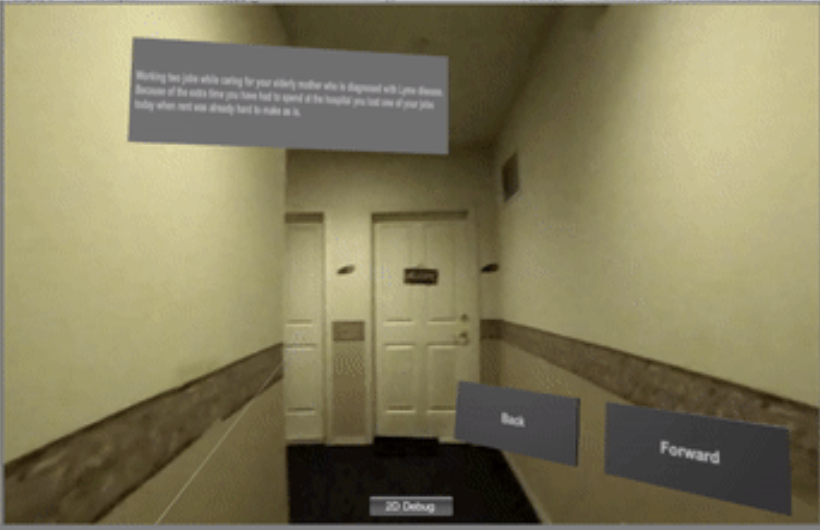
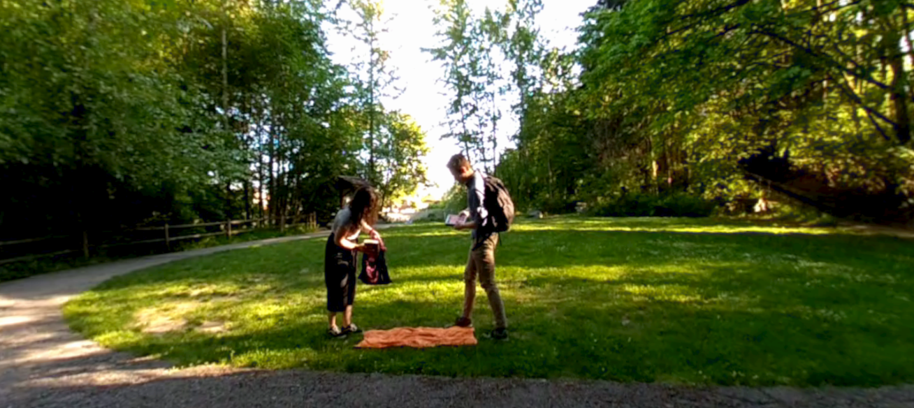
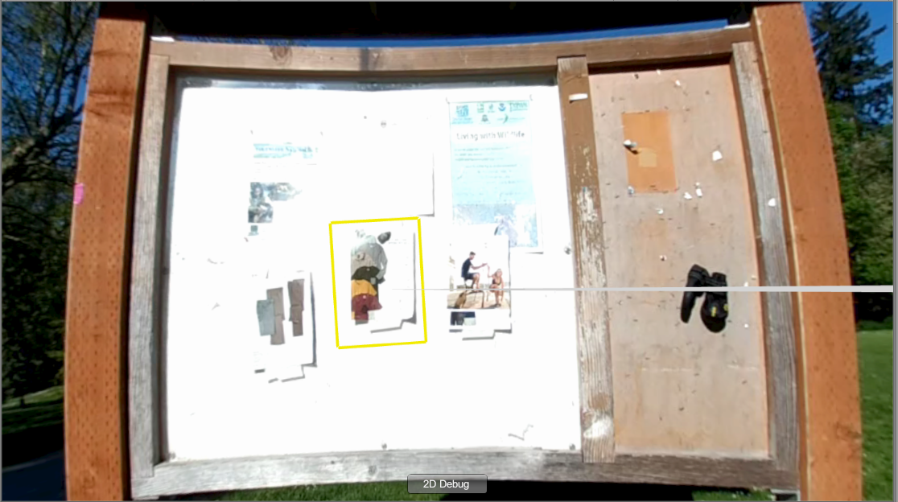

For this week, a lot of time was dedicated towards filming VR videos and each creating one rendered experience. Aaron and Erika worked on filming the park scene and creating the rendered experiences that allowed the player to choose between working an extra shift and lining up for the shelter. Alison and Amy worked on filming the eviction scene and polishing the bin experience. We’ve integrated all of these scenes into one experience.
Alison & Amy: We went to an apartment to film different scenes that would help set up the background story behind the storyline. There were three main clips that were filmed. The first clip shows the user walking home and entering their apartment. The second clip shows the user sitting on the ground at home, while watching “Seattle is Dying”. The third clip shows the user walking toward the door after hearing a knock and picking up an eviction notice from under the door. After filming these scenes, we imported them into Unity and added planes into the scene that contain the narration that we would like to hear. We created these visual text boxes instead of actually recording the audio, because we felt like it was inauthentic and did not want to stereotype or stigmatize these situations. To combat this problem, we plan on finding narratives from people who have actually experienced homelessness. In addition, after viewing the scenes in the VR headset, we noticed that some of the scenes would be better represented as still videos. Walking into the apartment was disorienting and difficult, especially since the camera was shakey and the recorder had to physically open the door, thus adding to the shakiness.


We also worked on finishing the rendered experience. From last week, we struggled with getting the laser pointers working. We ended up leaving the laser pointers and just using the controllers to grab the items. Resizing the items made it a lot easier for the player to grab items. After making that change and editing all of our assets, we were able to allow the player to grab and pick up items from the bin.
As we weren’t able to get footage of a homeless shelter, we filmed the IMA mat room to act as our background. Based off of images sent by the shelters we contacted, we added bunk bed assets to recreate the shelters. The player can teleport to the bin area, rummage through items and then realize that their wallet is missing.

Aaron and Erika: We filmed the park scene this week in Ravenna Park. Once we got to the park, we needed to find a place with a bench, a sitting area in front, and not any people. This was difficult since it was so nice out! Once we found the spot we filmed a few different views. First, an “approaching” view of the bench. Then, a scene from the viewpoint of the bench looking out on a grassy area. The people sitting in that area look back and notice you sitting on the bench, then leave. Finally, a scene where you get a text from a coworker asking you to cover their shift. This video didn’t turn out great because the camera didn’t focus correctly on the phone. We think that it was just too close, so we’ll try filming this again. Our second choice is to film a background scene and have a rendered phone with the text message.

We also filmed a video of a billboard with various flyers on it. We put this into Unity and put invisible buttons on the flyers. This worked okay, but we plan on instead taking a picture of an empty billboard and putting rendered flyers on the billboard.

Our highest priority for next week is to find recordings that we can use as the voiceover for our scenes. We are also going to refilm the eviction scenes to not have a moving camera, and the cell phone scene to fix the focus.